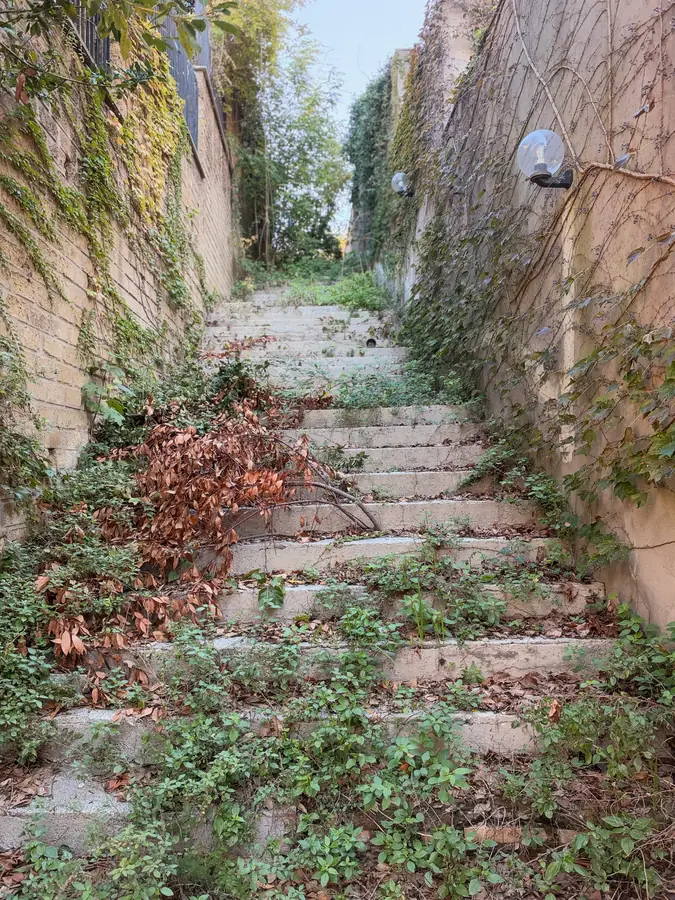

Утро началось с парковки машины, но про это я уже писал. Потом завтрак от гостиницы, который на самом деле оказался круассаном с кофе в ближайшем кафе за углом. Круассан, кстати, вкусный, как и кофе. Так что претензий нет.
Дальше пешком, минут двадцать, до площади Святого Петра. Эти колоннады словами не перескажешь, насколько это монументально. Ты чувствуешь себя правда какой-то пушинкой. Во всём чувствуется величина Церкви, которая это построила, и малость винтика в этом огромном механизме. Гида у нас не было. Яна и Маша снимали себя на фоне всего, а я смотрел и пытался хоть что-то уложить в голове. Всего не пересмотришь и не оценишь. Ты прикасаешься даже не к вершине, а просто к краю великой культуры.
Зашли в магазины. Почти везде у них есть Казанская икона Божией Матери. А тридцать первое октября, между прочим, — память апостола Луки, который, по преданию, написал первые иконы Богородицы. Такая вот перекличка.

У собора очередь громадная, там целый день провести можно. Мы долго сомневались, стоять или нет. Но зашли. Собор поражает и размером, и красотой. Главный купол — около сорока метров в диаметре. А маленький купол на самом верху, над ним, почти такой же, как купол церкви в Тишках. Только в Тишках он кажется большим, а здесь, наверху, — крошечный.
В книжной лавке нашлась отдельная полка на славянском и русском, причём издания шестьдесят второго года, как раз времён Второго Ватиканского собора. Купил «Указание к совершению православного богослужения». Интересно, да? Сохранили до сегодняшнего дня и продают в магазине Ватикана.

Внизу, под собором, усыпальницы пап. В том числе тех, о ком мы говорим на наших пятничных беседах. На одной могиле написано, что самое главное в жизни этого человека — он «способствовал примирению с Восточной Церковью». А надгробие Александра VII, того, кто строил колоннаду, — смерть под красным каменным покрывалом и Истина, укрытая бронзовым покровом в цвет белого мрамора. Смотреть не пересмотреть.
Туристов море, из всех стран. Работники строго следят, чтобы никто нигде не присел даже на минутку. Я спросил одного, зачем прогонять. Он с раздражением: они всю лестницу перекрыли. Тоже правда.

Как бы ни хотелось думать, что показалось, — нет. Культ Папы правда есть. В книжном почти всё про него, буквы в два метра высотой в основании купола — про него. Немного непривычно. Зато по всему собору статуи основателей орденов. Хорошая мысль — выделять тех, кто начал каждое направление служения. В этом, как мне думается, отчасти секрет успеха западной Церкви в миссии и социальной работе.
Обедали в маленьком ресторане, который сами бы никогда не нашли. Выбрали местную римскую пасту. По мне, макароны как макароны, как в Орландо, не лучше.
Вечером замок Святого Ангела — строился как мавзолей императора Адриана, потом стал резиденцией пап и крепостью. Сразу у входа зал Папы (опять Папы), на стенах мелкие фигурки делают что угодно. Наверное, средневековая инстаграм-лента. Так и представляю: кресло-качалка, собака, камин, и Папа за год проходит все стены, потом по новой. А в конце дня — закат на фоне собора.


Из плана на сегодня получилась только половина, и это нормально.


Завтра — древний Рим.